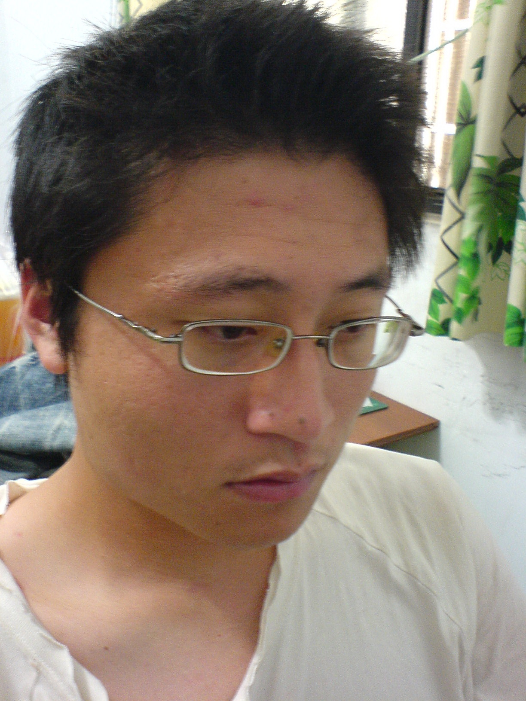

吳國豪

Kuo-Hao Wu
Speech and Audio Information Lab
Department of Computer Scienceand Engineering
National Sun Yet-Sen University
70,
Lien-Hai Road, Kaohsiung, Taiwan 804
E-mail:wkh97m@cse.nsysu.edu.tw
Tel: +886-7-5251750~434201
Research Interests
Education
BS
(2007)
Department of Information and Computer, Chung-Yuan University
Current research topic